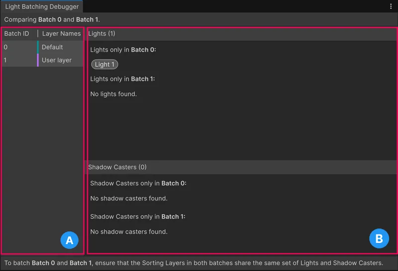

Organize your 2D lights so Unity uses fewer textures to render light and shadows.
If two or more sorting layers of GameObjects need exactly the same lights, Unity can render them using a single light texture and shadow texture instead of multiple textures. This process is called light batching and improves performance. For more information about light and shadow textures, refer to Introduction to 2D lighting.
Batch lights and shadows
To merge two batches by making sure they use exactly the same lights, use the Light Batching Debugger window.
Follow these steps:
From the main menu, select Window > 2D > Light Batching Debugger.
In the left-hand panel, select two batches to check how the 2D lights and shadows differ between the two batches.
Select each light in the Lights list, then set its Target Sorting Layers property to match the Layer Names.
Select each GameObject in the Shadow Casters list, then, in its Shadow Caster 2D component, set its Target Sorting Layers property to match the Layer Names.
For example, in the screenshot in the Light Batching Debugger window reference section, Light A exists in Batch 0 but not in Batch 1. To merge the batches, set the Target Sorting Layers of Light A to both the BG and Default layers.
Minimize render textures
To reduce how much Unity writes to light and shadow textures, use one or more of the following approaches:
To reduce the size of light textures, use the Render Scale property of the 2D Renderer asset.
If you have a lot of sorting layers that each have their own set of lights, increase the Max Light Render Textures in the 2D Renderer asset so Unity can pre-render all the light textures in one go. This can increase the amount of memory Unity uses.
To reduce the number of light textures, use fewer different Blend Style values in the 2D lights in your scene. Each different blend style you use creates a new light render texture. The best practice is to use only one or two different blend styles in a scene.
Lighting Batching Debugger window reference

The Light Batching Debugger window with the batch panel on the left (A), and the main area on the right (B).
A: The list of 2D light batches. Each batch represents one light texture. The Layers column lists which sorting layers Unity draws using the light texture.
B: The main area. When you select two batches, this area lists which lights or shadows prevent Unity merging the batches. In the example, Light A needs its own light texture because it targets only the BG sorting layer rather than both the BG and Default sorting layers.